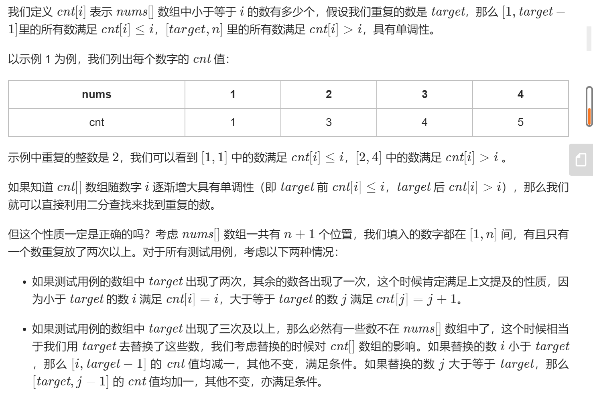
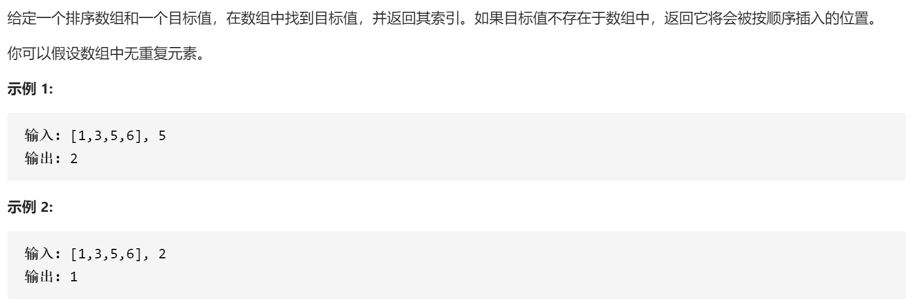

283 移动零点
//Given an array nums, write a function to move all 0’s to the end of it while m
//aintaining the relative order of the non-zero elements.
//
// Example:
//
//
//Input: [0,1,0,3,12]
//Output: [1,3,12,0,0]
//
// Note:
//
//
[// You must do this in-place without making a copy of the array.](// You must do this in-place without making a copy of the array. )
// Minimize the total number of operations.
// Related Topics 数组 双指针
// 👍 734 👎 0[解题思路：]
- 给定数组，两个指针，分别指向开头和末尾，对应情况分别给出判断和处理流程
- 开头是0，末尾是0
- 开头不是零，末尾是0
- 开头不是零，末尾不是0
- 开头是0，末尾不是0
- 两个指针指向开始，一个循环遍历，另一个指向非零数应在的位置，遍历结束后后面置0
方法二：
class Solution {
public void moveZeroes(int[] nums) {
int nonZeroIndex = 0;
for (int num : nums) {
if (num != 0){
nums[nonZeroIndex] = num;
nonZeroIndex++;
}
}
for (int i =nonZeroIndex;i < nums.length;i++){
nums[i] = 0;
}
}
}时间复杂度:O(n)
空间复杂度:O(1)
566 重塑矩阵
/In MATLAB, there is a very useful function called ‘reshape’, which can reshape
// a matrix into a new one with different size but keep its original data.
//
//
//
//You’re given a matrix represented by a two-dimensional array, and two positive
// integers r and c representing the row number and column number of the wanted re
//shaped matrix, respectively.
//
// The reshaped matrix need to be filled with all the elements of the original m
//atrix in the same row-traversing order as they were.
//
//
//
//If the ‘reshape’ operation with given parameters is possible and legal, output
// the new reshaped matrix; Otherwise, output the original matrix.
//
//
// Example 1:
//
//Input:
//nums =
//[[1,2],
// [3,4]]
//r = 1, c = 4
//Output:
//[[1,2,3,4]]
//Explanation: The row-traversing of nums is [1,2,3,4]. The new reshaped matrix
//is a 1 4 matrix, fill it row by row by using the previous list.
//
//
//
// Example 2:
//
//Input:
//nums =
//[[1,2],
// [3,4]]
//r = 2, c = 4
//Output:
//[[1,2],
// [3,4]]
//Explanation: There is no way to reshape a 2 2 matrix to a 2 * 4 matrix. So o
//utput the original matrix.
//
//
//
// Note:
//
// The height and width of the given matrix is in range [1, 100].
// The given r and c are all positive.
//
// Related Topics 数组
// 👍 136 👎 0[解题思路：]
首先判断如果重塑前后矩阵元素并不符合，直接返回
class Solution {
public int[][] matrixReshape(int[][] nums, int r, int c) {
int m = nums.length,n=nums[0].length;
if (m * n != r * c){
return nums;
}
int index = 0;
int[][] reshapedMatrix = new int[r][c];
for (int i = 0;i<r;i++) {
for (int j = 0;j<c;j++) {
reshapedMatrix[i][j] = nums[index / n][index % n];
index++;
}
}
return reshapedMatrix;
}
}时间复杂度：O(m*n)
空间复杂度：O(m*n)
485 找出数组最大连续1
//给定一个二进制数组， 计算其中最大连续1的个数。
//
// 示例 1:
//
//
//输入: [1,1,0,1,1,1]
//输出: 3
//解释: 开头的两位和最后的三位都是连续1，所以最大连续1的个数是 3.
//
//
// 注意：
//
//
// 输入的数组只包含 0 和1。
// 输入数组的长度是正整数，且不超过 10,000。
//
// Related Topics 数组
// 👍 128 👎 0两指针，一个指向最大值，一个在遍历中统计当前连续1
class Solution {
public int findMaxConsecutiveOnes(int[] nums) {
int max = 0, cur = 0;
for (int x : nums) {
cur = x == 0 ? 0 : cur + 1;
max = Math.max(max, cur);
}
return max;
}
}时间复杂度：O(n)
空间复杂度：O(1)
240 搜索二维矩阵
//编写一个高效的算法来搜索 m x n 矩阵 matrix 中的一个目标值 target。该矩阵具有以下特性：
//
//
// 每行的元素从左到右升序排列。
// 每列的元素从上到下升序排列。
//
//
// 示例:
//
// 现有矩阵 matrix 如下：
//
// [
// [1, 4, 7, 11, 15],
// [2, 5, 8, 12, 19],
// [3, 6, 9, 16, 22],
// [10, 13, 14, 17, 24],
// [18, 21, 23, 26, 30]
//]
//
//
// 给定 target = 5，返回 true。
//
// 给定 target = 20，返回 false。
// Related Topics 二分查找 分治算法
// 👍 446 👎 0
解决思路：
- 对于每一行我们可以像搜索未排序的一维数组——通过检查每个元素来判断是否有目标值。
- 矩阵已经排过序，就需要使用二分法搜索以加快我们的算法。
方法一：
class Solution {
public boolean searchMatrix(int[][] matrix, int target) {
for (int i = 0; i < matrix.length; i++) {
for (int j = 0; j < matrix[0].length; j++) {
if (matrix[i][j] == target) {
return true;
}
}
}
return false;
}
}时间复杂度：O(mn)
空间复杂度：O(1)
方法二：
public boolean searchMatrix(int[][] matrix, int target) {
if (matrix == null || matrix.length == 0 || matrix[0].length == 0) return false;
int m = matrix.length, n = matrix[0].length;
int row = 0, col = n - 1;
while (row < m && col >= 0) {
if (target == matrix[row][col]) return true;
else if (target < matrix[row][col]) col--;
else row++;
}
return false;
}时间复杂度：O(m+n)
空间复杂度：O(1)
378 有序矩阵的 Kth Element
//给定一个 n x n 矩阵，其中每行和每列元素均按升序排序，找到矩阵中第 k 小的元素。
//请注意，它是排序后的第 k 小元素，而不是第 k 个不同的元素。
//
//
//
// 示例：
//
// matrix = [
// [ 1, 5, 9],
// [10, 11, 13],
// [12, 13, 15]
//],
//k = 8,
//
//返回 13。
//
//
//
//
// 提示：
//你可以假设 k 的值永远是有效的，1 ≤ k ≤ n2 。
// Related Topics 堆 二分查找
// 👍 439 👎 0
- 最直接的做法是将这个二维数组另存为为一维数组，并对该一维数组进行排序。最后这个一维数组中的第 k小个数即为答案。
- 二分 由题目给出的性质可知，这个矩阵内的元素是从左上到右下递增的
第一种：
class Solution {
public int kthSmallest(int[][] matrix, int k) {
int rows = matrix.length, columns = matrix[0].length;
int[] sorted = new int[rows * columns];
int index = 0;
for (int[] row : matrix) {
for (int num : row) {
sorted[index++] = num;
}
}
Arrays.sort(sorted);
return sorted[k - 1];
}
}时间复杂度：O(n^2^logn) 对n^2^个数排序
空间复杂度：O(n^2^) 一维数组
第二种：
public int kthSmallest(int[][] matrix, int k) {
int m = matrix.length, n = matrix[0].length;
int lo = matrix[0][0], hi = matrix[m - 1][n - 1];
while (lo <= hi) {
int mid = lo + (hi - lo) / 2;
int cnt = 0;
for (int i = 0; i < m; i++) {
for (int j = 0; j < n && matrix[i][j] <= mid; j++) {
cnt++;
}
}
if (cnt < k) lo = mid + 1;
else hi = mid - 1;
}
return lo;
}时间复杂度：O(nlog（r-l）)
空间复杂度：O(1)
645 错误的集合
//集合 S 包含从1到 n 的整数。不幸的是，因为数据错误，导致集合里面某一个元素复制了成了集合里面的另外一个元素的值，导致集合丢失了一个整数并且有一个元素重
//复。
//
// 给定一个数组 nums 代表了集合 S 发生错误后的结果。你的任务是首先寻找到重复出现的整数，再找到丢失的整数，将它们以数组的形式返回。
//
// 示例 1:
//
//
//输入: nums = [1,2,2,4]
//输出: [2,3]
//
//
// 注意:
//
//
// 给定数组的长度范围是 [2, 10000]。
[// 给定的数组是无序的。](// 给定的数组是无序的。)
//
// Related Topics 哈希表 数学
// 👍 125 👎 0解决思路：
暴力解法 检查每个数字在数组中出现的次数
最直接的方法是先对分解进行排序，这种方法时间复杂度为O（NlogN）。本题可以以O（N）的时间复杂度，O（1）空间复杂度来替代
使用 Map
使用额外数组，相比map减少了使用空间，使用索引代表key值
使用额外空间 ，访问到的数将其值所对应的索引变为负，检查中若哪个索引值将变换两次，此时不变换并记录该重复值，若那个索引不为负数则为缺失值
解法1：
public class Solution {
public int[] findErrorNums(int[] nums) {
int dup = -1, missing = -1;
for (int i = 1; i <= nums.length; i++) {
int count = 0;
for (int j = 0; j < nums.length; j++) {
if (nums[j] == i)
count++;
}
if (count == 2)
dup = i;
else if (count == 0)
missing = i;
}
return new int[] {dup, missing};
}
}
时间复杂度：O(n^2^)
空间复杂度：O(1)
这一版不是很懂
public int[] findErrorNums(int[] nums) {
for (int i = 0; i < nums.length; i++) {
while (nums[i] != i + 1 && nums[nums[i] - 1] != nums[i]) {
swap(nums, i, nums[i] - 1);
}
}
for (int i = 0; i < nums.length; i++) {
if (nums[i] != i + 1) {
return new int[]{nums[i], i + 1};
}
}
return null;
}
private void swap(int[] nums, int i, int j) {
int tmp = nums[i];
nums[i] = nums[j];
nums[j] = tmp;
}解法3：
public class Solution {
public int[] findErrorNums(int[] nums) {
Map < Integer, Integer > map = new HashMap();
int dup = -1, missing = 1;
for (int n: nums) {
map.put(n, map.getOrDefault(n, 0) + 1);
}
for (int i = 1; i <= nums.length; i++) {
if (map.containsKey(i)) {
if (map.get(i) == 2)
dup = i;
} else
missing = i;
}
return new int[]{dup, missing};
}
}时间复杂度：O(n)
空间复杂度：O(n)
解法4：
public class Solution {
public int[] findErrorNums(int[] nums) {
int[] arr = new int[nums.length + 1];
int dup = -1, missing = 1;
for (int i = 0; i < nums.length; i++) {
arr[nums[i]] += 1;
}
for (int i = 1; i < arr.length; i++) {
if (arr[i] == 0)
missing = i;
else if (arr[i] == 2)
dup = i;
}
return new int[]{dup, missing};
}
}
时间复杂度：O(n)
空间复杂度：O(n)
方法5：
public class Solution {
public int[] findErrorNums(int[] nums) {
int dup = -1, missing = 1;
for (int n: nums) {
if (nums[Math.abs(n) - 1] < 0)
dup = Math.abs(n);
else
nums[Math.abs(n) - 1] *= -1;
}
for (int i = 1; i < nums.length; i++) {
if (nums[i] > 0)
missing = i + 1;
}
return new int[]{dup, missing};
}
}时间复杂度：O(n)
空间复杂度：O(1)
287 寻找重复数
//给定一个包含 n + 1 个整数的数组 nums，其数字都在 1 到 n 之间（包括 1 和 n），可知至少存在一个重复的整数。假设只有一个重复的整数，找出
//这个重复的数。
//
// 示例 1:
//
// 输入: [1,3,4,2,2]
//输出: 2
//
//
// 示例 2:
//
// 输入: [3,1,3,4,2]
//输出: 3
//
//
// 说明：
//
//
[// 不能更改原数组（假设数组是只读的）。
// 只能使用额外的 O(1) 的空间。
// 时间复杂度小于 O(n2) 。
// 数组中只有一个重复的数字，但它可能不止重复出现一次。](// 不能更改原数组（假设数组是只读的）。
// 只能使用额外的 O(1) 的空间。
// 时间复杂度小于 O(n2) 。
// 数组中只有一个重复的数字，但它可能不止重复出现一次。 )
//
// Related Topics 数组 双指针 二分查找
// 👍 891 👎 0
- 二分查找：
- 理解：数组包含n+1个整数，都在1-n之间，只有一个重复数，重复次数不清楚
- 暴力解法和哈希表解法均不满足条件，要求不能修改数组，也不能使用额外的空间。所以考虑特性
- 对数组中出现数字分别统计出现次数，这个次数与重复数的出现有关，
- 
- 快慢指针：暂时不懂
public int findDuplicate(int[] nums) {
int l = 1, h = nums.length - 1;
while (l <= h) {
int mid = l + (h - l) / 2;
int cnt = 0;
for (int i = 0; i < nums.length; i++) {
if (nums[i] <= mid) cnt++;
}
if (cnt > mid) h = mid - 1;
else l = mid + 1;
}
return l;
}时间复杂度：O(nlogn)
空间复杂度：O(1)
667 优美的排列II
//给定两个整数 n 和 k，你需要实现一个数组，这个数组包含从 1 到 n 的 n 个不同整数，同时满足以下条件：
//
// ① 如果这个数组是 [a1, a2, a3, … , an] ，那么数组 [|a1 - a2|, |a2 - a3|, |a3 - a4|, …
//, |an-1 - an|] 中应该有且仅有 k 个不同整数；.
//
// ② 如果存在多种答案，你只需实现并返回其中任意一种.
//
// 示例 1:
//
//
//输入: n = 3, k = 1
//输出: [1, 2, 3]
//解释: [1, 2, 3] 包含 3 个范围在 1-3 的不同整数， 并且 [1, 1] 中有且仅有 1 个不同整数 : 1
//
//
//
//
// 示例 2:
//
//
//输入: n = 3, k = 2
//输出: [1, 3, 2]
//解释: [1, 3, 2] 包含 3 个范围在 1-3 的不同整数， 并且 [2, 1] 中有且仅有 2 个不同整数: 1 和 2
//
//
//
//
// 提示:
//
//
// n 和 k 满足条件 1 <= k < n <= 104.
//
//
//
// Related Topics 数组
// 👍 66 👎 0让前 k+1 个元素构建出 k 个不相同的差值，序列为：1 k+1 2 k 3 k-1 … k/2 k/2+1.
public int[] constructArray(int n, int k) {
int[] ret = new int[n];
ret[0] = 1;
for (int i = 1, interval = k; i <= k; i++, interval--) {
ret[i] = i % 2 == 1 ? ret[i - 1] + interval : ret[i - 1] - interval;
}
for (int i = k + 1; i < n; i++) {
ret[i] = i + 1;
}
return ret;
}697 数组的度
//给定一个非空且只包含非负数的整数数组 nums, 数组的度的定义是指数组里任一元素出现频数的最大值。
//
// 你的任务是找到与 nums 拥有相同大小的度的最短连续子数组，返回其长度。
//
// 示例 1:
//
//
//输入: [1, 2, 2, 3, 1]
//输出: 2
//解释:
//输入数组的度是2，因为元素1和2的出现频数最大，均为2.
//连续子数组里面拥有相同度的有如下所示:
//[1, 2, 2, 3, 1], [1, 2, 2, 3], [2, 2, 3, 1], [1, 2, 2], [2, 2, 3], [2, 2]
//最短连续子数组[2, 2]的长度为2，所以返回2.
//
//
// 示例 2:
//
//
//输入: [1,2,2,3,1,4,2]
//输出: 6
//
//
// 注意:
//
//
// nums.length 在1到50,000区间范围内。
// nums[i] 是一个在0到49,999范围内的整数。
//
// Related Topics 数组
// 👍 172 👎 0
public int findShortestSubArray(int[] nums) {
Map<Integer, Integer> numsCnt = new HashMap<>();
Map<Integer, Integer> numsLastIndex = new HashMap<>();
Map<Integer, Integer> numsFirstIndex = new HashMap<>();
for (int i = 0; i < nums.length; i++) {
int num = nums[i];
numsCnt.put(num, numsCnt.getOrDefault(num, 0) + 1);
numsLastIndex.put(num, i);
if (!numsFirstIndex.containsKey(num)) {
numsFirstIndex.put(num, i);
}
}
int maxCnt = 0;
for (int num : nums) {
maxCnt = Math.max(maxCnt, numsCnt.get(num));
}
int ret = nums.length;
for (int i = 0; i < nums.length; i++) {
int num = nums[i];
int cnt = numsCnt.get(num);
if (cnt != maxCnt) continue;
ret = Math.min(ret, numsLastIndex.get(num) - numsFirstIndex.get(num) + 1);
}
return ret;
}766 托普利兹矩阵
//如果矩阵上每一条由左上到右下的对角线上的元素都相同，那么这个矩阵是 托普利茨矩阵 。
//
// 给定一个 M x N 的矩阵，当且仅当它是托普利茨矩阵时返回 True。
//
// 示例 1:
//
// 输入:
//matrix = [
// [1,2,3,4],
// [5,1,2,3],
// [9,5,1,2]
//]
//输出: True
//解释:
//在上述矩阵中, 其对角线为:
//“[9]”, “[5, 5]”, “[1, 1, 1]”, “[2, 2, 2]”, “[3, 3]”, “[4]”。
//各条对角线上的所有元素均相同, 因此答案是True。
//
//
// 示例 2:
//
// 输入:
//matrix = [
// [1,2],
// [2,2]
//]
//输出: False
//解释:
//对角线”[1, 2]”上的元素不同。
//
//
// 说明:
//
//
// matrix 是一个包含整数的二维数组。
// matrix 的行数和列数均在 [1, 20]范围内。
// matrix[i][j] 包含的整数在 [0, 99]范围内。
//
//
// 进阶:
//
//
// 如果矩阵存储在磁盘上，并且磁盘内存是有限的，因此一次最多只能将一行矩阵加载到内存中，该怎么办？
// 如果矩阵太大以至于只能一次将部分行加载到内存中，该怎么办？
//
// Related Topics 数组
// 👍 139 👎 0
- 对每一斜数列进行检查
- 检查左上邻居
public boolean isToeplitzMatrix(int[][] matrix) {
for (int i = 0; i < matrix[0].length; i++) {
if (!check(matrix, matrix[0][i], 0, i)) {
return false;
}
}
for (int i = 0; i < matrix.length; i++) {
if (!check(matrix, matrix[i][0], i, 0)) {
return false;
}
}
return true;
}
private boolean check(int[][] matrix, int expectValue, int row, int col) {
if (row >= matrix.length || col >= matrix[0].length) {
return true;
}
if (matrix[row][col] != expectValue) {
return false;
}
return check(matrix, expectValue, row + 1, col + 1);
}时间复杂度：O(max(m,n))
空间复杂度：O(1)
class Solution {
public boolean isToeplitzMatrix(int[][] matrix) {
for (int r = 0; r < matrix.length; ++r)
for (int c = 0; c < matrix[0].length; ++c)
if (r > 0 && c > 0 && matrix[r-1][c-1] != matrix[r][c])
return false;
return true;
}
}时间复杂度：O(m*n)
空间复杂度：O(1)
565 数组嵌套
//索引从0开始长度为N的数组A，包含0到N - 1的所有整数。找到最大的集合S并返回其大小，其中 S[i] = {A[i], A[A[i]], A[A[A[i
//]]], … }且遵守以下的规则。
//
// 假设选择索引为i的元素A[i]为S的第一个元素，S的下一个元素应该是A[A[i]]，之后是A[A[A[i]]]… 以此类推，不断添加直到S出现重复的元
//素。
//
//
//
// 示例 1:
//
// 输入: A = [5,4,0,3,1,6,2]
//输出: 4
//解释:
//A[0] = 5, A[1] = 4, A[2] = 0, A[3] = 3, A[4] = 1, A[5] = 6, A[6] = 2.
//
//其中一种最长的 S[K]:
//S[0] = {A[0], A[5], A[6], A[2]} = {5, 6, 2, 0}
//
//
//
//
// 提示：
//
//
// N是[1, 20,000]之间的整数。
// A中不含有重复的元素。
// A中的元素大小在[0, N-1]之间。
//
// Related Topics 数组
// 👍 114 👎 0
- 暴力解法：对每个元素，进行循环判断，并以一个count值进行计数，最后判断最大count值
- 优化：
- 可以看出这些元素的循环判断通路是一样的，这样在遍历时会导致冗余计算，使用boolean数组进行标定
- 使用数组本身标记访问

public class Solution {
public int arrayNesting(int[] nums) {
int res = 0;
for (int i = 0; i < nums.length; i++) {
int start = nums[i], count = 0;
do {
start = nums[start];
count++;
}
while (start != nums[i]);
res = Math.max(res, count);
}
return res;
}
}时间复杂度：O(n^2^)
空间复杂度：O(1)
public class Solution {
public int arrayNesting(int[] nums) {
boolean[] visited = new boolean[nums.length];
int res = 0;
for (int i = 0; i < nums.length; i++) {
if (!visited[i]) {
int start = nums[i], count = 0;
do {
start = nums[start];
count++;
visited[start] = true;
}
while (start != nums[i]);
res = Math.max(res, count);
}
}
return res;
}
}时间复杂度：O(n)
空间复杂度：O(n)
public int arrayNesting(int[] nums) {
int max = 0;
for (int i = 0; i < nums.length; i++) {
int cnt = 0;
for (int j = i; nums[j] != -1; ) {
cnt++;
int t = nums[j];
nums[j] = -1; // 标记该位置已经被访问
j = t;
}
max = Math.max(max, cnt);
}
return max;
}时间复杂度：O(n)
空间复杂度：O(1)
769 分隔数组
//数组arr是[0, 1, …, arr.length - 1]的一种排列，我们将这个数组分割成几个“块”，并将这些块分别进行排序。之后再连接起来，使得连
//接的结果和按升序排序后的原数组相同。
//
// 我们最多能将数组分成多少块？
//
// 示例 1:
//
// 输入: arr = [4,3,2,1,0]
//输出: 1
//解释:
//将数组分成2块或者更多块，都无法得到所需的结果。
//例如，分成 [4, 3], [2, 1, 0] 的结果是 [3, 4, 0, 1, 2]，这不是有序的数组。
//
//
// 示例 2:
//
// 输入: arr = [1,0,2,3,4]
//输出: 4
//解释:
//我们可以把它分成两块，例如 [1, 0], [2, 3, 4]。
//然而，分成 [1, 0], [2], [3], [4] 可以得到最多的块数。
//
//
// 注意:
//
//
// arr 的长度在 [1, 10] 之间。
// arr[i]是 [0, 1, …, arr.length - 1]的一种排列。
//
// Related Topics 数组
// 👍 95 👎 0遍历数组，统计当前最大值，当此最大值等于其对应所在索引时，则此子数组可以分割为一个块，返回值加1
public int maxChunksToSorted(int[] arr) {
if (arr == null) return 0;
int ret = 0;
int right = arr[0];
for (int i = 0; i < arr.length; i++) {
right = Math.max(right, arr[i]);
if (right == i) ret++;
}
return ret;时间复杂度：O(n)
空间复杂度：O(1)
数组系列二分查找模板

class Solution { public int searchInsert(int[] nums, int target) { int n=nums.length; int left=0;int right=n-1;int ans=n; while(left<=right){ int mid = ((right-left)>>1)+left; if(target<=nums[mid]){ ans = mid; right = mid-1; }else{ left = mid+1; } } return ans; } }只要有搜索就可以在数组中使用二分这一方法，具体为对left与right赋值，在循环中添加判断条件，使用mid进行移位控制，框架如下：
public int searchInsert(int[] nums, int target) { int n=nums.length; int left=0;int right=n-1; while(left<=right){ int mid = ((right-left)>>1)+left; if(target<=nums[mid]){ right = mid-1; }else{ left = mid+1; } } return left; } 这种情况可以避免所插数比数组长度处数还要大的情况 或者 int n=nums.length;int left=0;int right=n-1;int ans=n; while(left<right){ int mid = ((right-left)>>1)+left; if(target<=nums[mid]){ ans = mid; right = mid; }else{ left = mid+1; } } 这种情况仅适用于查找已有元素这个框架直接可以找到你想找的数所在位置，ans即为所指，当没找到想找插入位置时，此框架也可找到其所在位置，只是当所插入位置在数组长度处时，仅在刚开始时赋值给ans即可